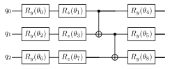
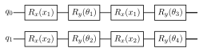
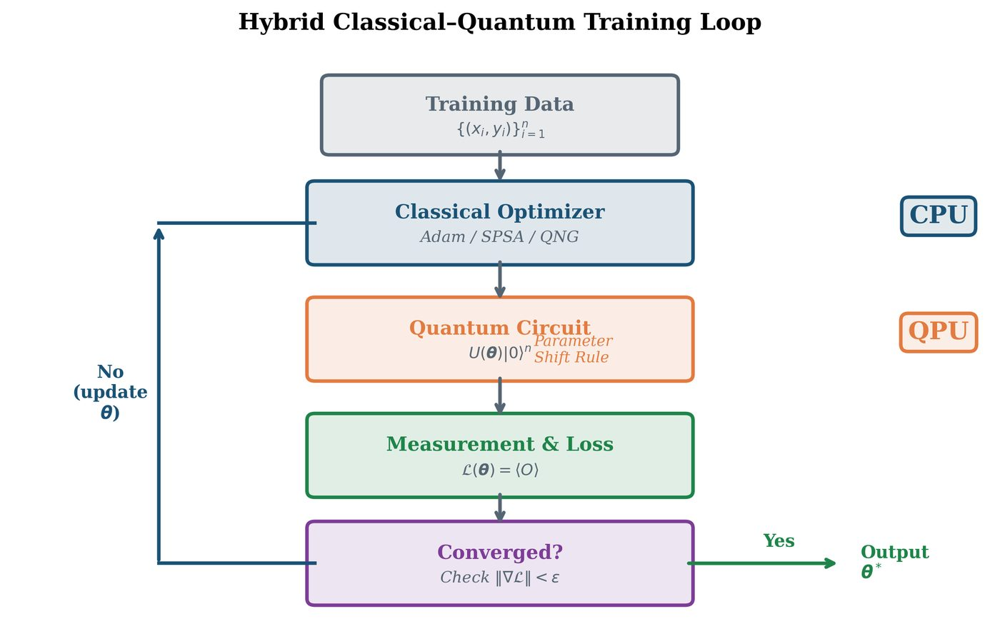
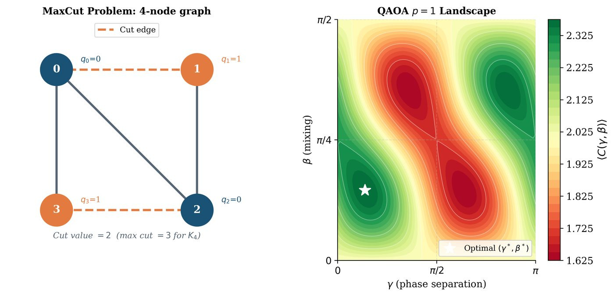

Chapter 6: Variational Quantum Circuits¶
Variational quantum circuits are the workhorse of NISQ-era quantum machine learning. A parameterized quantum circuit is trained by a classical optimizer to minimize a cost function evaluated on a quantum processor. This hybrid classical-quantum paradigm sidesteps the requirement for fault-tolerant hardware and is the basis of VQE, QAOA, variational classifiers, and most of the QML algorithms in this book.
Learning Objectives
By the end of this chapter, you will be able to:
-
Design and analyze parameterized quantum circuits (ansätze)
-
Quantify expressibility and entanglement capability of a PQC
-
Implement the hybrid classical-quantum training loop
-
Apply VQE to molecular energy estimation
-
Apply QAOA to combinatorial optimization problems
-
Build a variational quantum classifier in PennyLane
6.1 Parameterized Quantum Circuits¶
6.1.1 The Variational Principle¶
A parameterized quantum circuit (PQC) or variational quantum circuit (VQC) is a unitary \(U(\boldsymbol{\theta})\) depending on tunable real parameters \(\boldsymbol{\theta}\in\mathbb{R}^p\):
where \(W_l\) are fixed unitaries (entangling gates) and \(U_l(\theta_l) = e^{-i\theta_l G_l / 2}\) are parameterized rotations driven by Hermitian generators \(G_l\) (e.g., Pauli operators).
The quantum cost function:
where \(\rho_0 = |0\rangle\langle0|^{\otimes n}\) is the initial state and \(\hat{O}\) is an observable.
6.1.2 Ansatz Design Philosophy¶
A good ansatz balances three competing requirements:
-
Expressibility: Can represent the target state
-
Trainability: Gradients are non-vanishing (no barren plateau)
-
Hardware efficiency: Shallow depth, native gate set
6.2 Common Ansatz Architectures¶
6.2.1 Hardware-Efficient Ansatz¶
Uses the native gate set of the quantum device:

Each layer: single-qubit rotations on all qubits, then a ring of CNOT gates. Repeated \(L\) times: total \(O(nL)\) parameters.
Pros: Shallow depth, hardware-native. Cons: High expressibility \(\Rightarrow\) barren plateaus for large \(n,L\).
6.2.2 Strongly Entangling Layers¶
PennyLane’s StronglyEntanglingLayers: 3 rotations (\(R_z\), \(R_y\), \(R_z\)) per qubit, then CNOT gates with skip-\(s\) connectivity.
6.2.3 Data Re-uploading Ansatz¶
Introduced by Pérez-Salinas et al. (2020) (Pérez-Salinas et al. 2020): encode classical data multiple times in the circuit, interleaved with trainable rotations:
where \(S(\mathbf{x})\) is the data encoding and \(W(\boldsymbol{\theta}_l)\) is a trainable layer. This is a universal quantum classifier for \(r\) sufficiently large.

6.3 Expressibility and Entanglement Capability¶
Expressibility (Sim et al. 2019): measures how well a PQC approximates the Haar random distribution over unitaries. Formally:
Smaller \(\mathcal{A}_{\text{expr}}\) \(\Rightarrow\) more expressive (but more barren-plateau prone).
Entanglement capability: Meyer-Wallach measure over sampled parameter vectors:
6.4 The Hybrid Classical-Quantum Loop¶

The parameter shift rule (Mitarai et al. 2018; Schuld et al. 2019) computes exact quantum gradients:
This requires 2 circuit evaluations per parameter (vs. \(O(p^2)\) for finite differences). See Chapter 15 for the full derivation.
6.5 Variational Quantum Eigensolver (VQE)¶
Problem: Estimate ground state energy \(E_0 = \min_{|\psi\rangle}\langle\psi|\hat{H}|\psi\rangle\). Variational principle: \(E_0 \leq \langle\psi(\boldsymbol{\theta})|\hat{H}|\psi(\boldsymbol{\theta})\rangle\) for any \(|\psi(\boldsymbol{\theta})\rangle\).
Algorithm: Variational Quantum Eigensolver (VQE)
Input: Hamiltonian \(\hat{H}=\sum_k c_k P_k\) (Pauli decomposition), ansatz \(U(\boldsymbol{\theta})\).
Output: Approximation to ground state energy \(\tilde{E}_0\).
-
Initialize \(\boldsymbol{\theta}^{(0)}\) randomly
-
Repeat until convergence:
-
For each Pauli term \(P_k\): evaluate \(\langle P_k\rangle_{\boldsymbol{\theta}}\) on QPU (shot-based)
-
Compute cost: \(\mathcal{C}(\boldsymbol{\theta}) = \sum_k c_k \langle P_k\rangle_{\boldsymbol{\theta}}\)
-
Compute gradient via parameter shift rule
-
Update: \(\boldsymbol{\theta} \leftarrow \boldsymbol{\theta} - \eta\nabla\mathcal{C}\)
-
-
Return \(\tilde{E}_0 = \mathcal{C}(\boldsymbol{\theta}^*)\)
Solved Example 6.1
Problem: Apply 1-qubit VQE to \(\hat{H} = Z\) with ansatz \(R_y(\theta)|0\rangle\).
Solution: \(|\psi(\theta)\rangle = \cos(\theta/2)|0\rangle + \sin(\theta/2)|1\rangle\). \(\mathcal{C}(\theta) = \langle\psi|Z|\psi\rangle = \cos^2(\theta/2) - \sin^2(\theta/2) = \cos\theta\). Minimum at \(\theta^* = \pi\): \(\mathcal{C}(\pi) = -1 = E_0\) (ground state \(|1\rangle\)).
6.6 Quantum Approximate Optimization Algorithm (QAOA)¶
Problem class: Combinatorial optimization \(\min_{\mathbf{z}\in\{-1,+1\}^n} C(\mathbf{z})\). Express as Ising Hamiltonian: \(H_C = \sum_{(i,j)\in E} w_{ij}Z_iZ_j\).
QAOA circuit (\(p\) layers):
where \(H_B = \sum_i X_i\) (mixer) and \(H_C\) encodes the objective.
Cost function: \(F_p(\boldsymbol{\gamma},\boldsymbol{\beta}) = \langle\boldsymbol{\gamma},\boldsymbol{\beta}|H_C|\boldsymbol{\gamma},\boldsymbol{\beta}\rangle\).

Solved Example 6.2
Problem: Set up QAOA \(p=1\) for MaxCut on the 3-node triangle graph \(G = (\{0,1,2\}, \{(0,1),(1,2),(0,2)\})\).
Solution: MaxCut objective: \(C(\mathbf{z}) = \frac{1}{2}\sum_{(i,j)\in E}(1-z_iz_j)\). Ising Hamiltonian: \(H_C = -\frac{1}{2}(Z_0Z_1 + Z_1Z_2 + Z_0Z_2) + \frac{3}{2}I\). Mixer: \(H_B = X_0 + X_1 + X_2\). Initial state: \(|{+}{+}{+}\rangle\). Circuit: apply \(e^{-i\gamma H_C}\) (3 ZZ rotations) then \(e^{-i\beta H_B}\) (3 Rx rotations). Optimize \(F_1(\gamma,\beta) = \langle H_C\rangle\) over \((\gamma,\beta)\). For this graph, MaxCut = 2 (achievable by many partitions).
6.7 Variational Quantum Classifier¶
Architecture: data encoding \(U_\phi(\mathbf{x})\) followed by trainable ansatz \(W(\boldsymbol{\theta})\).
Output: \(\hat{y}(\mathbf{x}) = \text{sign}(\langle Z_0\rangle_{\psi(\mathbf{x},\boldsymbol{\theta})})\). Loss: cross-entropy or hinge loss on \(\{\langle Z_0\rangle\}_{i=1}^N\).
import pennylane as qml
import numpy as np
from pennylane import numpy as pnp
n_qubits = 4
dev = qml.device("default.qubit", wires=n_qubits)
# -- VQE for Hydrogen ------------------------------------------
H2_coeffs = [-0.2252, 0.1777, 0.1777, -0.2427, -0.2427, 0.1706, 0.1706]
H2_ops = [qml.Identity(0), qml.PauliZ(0), qml.PauliZ(1),
qml.PauliZ(0)@qml.PauliZ(1), qml.PauliY(0)@qml.PauliY(1),
qml.PauliX(0)@qml.PauliX(1), qml.PauliZ(2)]
H2 = qml.Hamiltonian(H2_coeffs[:4], H2_ops[:4]) # simplified
dev_vqe = qml.device("default.qubit", wires=2)
@qml.qnode(dev_vqe)
def vqe_circuit(params):
qml.RY(params[0], wires=0)
qml.RY(params[1], wires=1)
qml.CNOT(wires=[0, 1])
qml.RY(params[2], wires=0)
return qml.expval(H2)
opt = qml.GradientDescentOptimizer(stepsize=0.4)
params = pnp.array([0.1, 0.2, 0.3], requires_grad=True)
for step in range(100):
params, energy = opt.step_and_cost(vqe_circuit, params)
if step
print(f"Step {step:3d} | Energy = {energy:.6f} Ha")
# -- QAOA for MaxCut -------------------------------------------
dev_qaoa = qml.device("default.qubit", wires=4)
edges = [(0,1), (1,2), (2,3), (3,0)] # 4-node ring
def qaoa_layer(gamma, beta):
for i, j in edges:
qml.IsingZZ(2 * gamma, wires=[i, j])
for i in range(4):
qml.RX(2 * beta, wires=i)
@qml.qnode(dev_qaoa)
def qaoa_circuit(params, n_layers=2):
for i in range(4): qml.Hadamard(i)
for l in range(n_layers):
qaoa_layer(params[2*l], params[2*l+1])
return qml.expval(qml.sum(*[qml.PauliZ(i)@qml.PauliZ(j) for i,j in edges]))
params = pnp.array([0.5, 0.3, 0.8, 0.2], requires_grad=True)
opt_qaoa = qml.AdamOptimizer(stepsize=0.1)
for step in range(50):
params, cost = opt_qaoa.step_and_cost(qaoa_circuit, params)
print(f"QAOA MaxCut cost: {-cost:.4f}")
6.8 Chapter Summary¶
Chapter Summary
-
PQC: Parameterized quantum circuit \(U(\boldsymbol{\theta})\) as a trainable model. Output is expectation value \(\mathcal{C}(\boldsymbol{\theta})=\langle\hat{O}\rangle\).
-
Ansatz architectures: Hardware-efficient, strongly entangling, UCCSD (chemistry), data re-uploading. Each trades expressibility vs. trainability.
-
Expressibility: Closeness of PQC ensemble to Haar measure. High expressibility \(\Rightarrow\) barren plateaus.
-
Hybrid loop: Classical optimizer + quantum cost evaluation. Gradients via parameter shift rule (2 circuit evaluations per parameter).
-
VQE: Minimize \(\langle\hat{H}\rangle\) to approximate ground state energy. Used for quantum chemistry and materials science.
-
QAOA: \(p\)-layer alternating problem/mixer Hamiltonians for combinatorial optimization. Exact at \(p\to\infty\).
-
VQC: Data encoding + trainable ansatz = parameterized classifier. Training uses cross-entropy loss + parameter shift gradients.
Exercises
Exercise . For a 2-qubit hardware-efficient ansatz with 1 layer, how many parameters does it have? Write out the full circuit unitary as a product of matrices.
Exercise . Verify the parameter shift rule for \(\mathcal{C}(\theta) = \langle 0|R_y^\dagger(\theta) Z R_y(\theta)|0\rangle\). Compute the gradient analytically and confirm it equals \(\frac{1}{2}[\mathcal{C}(\theta+\pi/2)-\mathcal{C}(\theta-\pi/2)]\).
Exercise . For the 1-qubit VQE with \(\hat{H} = aX + bZ\), find the optimal angle \(\theta^*\) that minimizes the energy. What is \(E_0\)?
Exercise . Show that for \(p\to\infty\), QAOA can exactly solve any optimization problem. Hint: Show that QAOA can represent adiabatic evolution.
Exercise . Implement a VQC for binary classification on the make_moons dataset using PennyLane with 2 qubits, angle encoding, and 2 strongly entangling layers. Compare accuracy to a classical SVM with RBF kernel.
Further Reading
-
Peruzzo et al. (2014) (Peruzzo et al. 2014) — original VQE paper
-
Farhi et al. (2014) (Farhi et al. 2014) — original QAOA paper
-
Schuld et al. (2020) (Schuld et al. 2021) — circuit-centric quantum classifier
-
Sim et al. (2019) (Sim et al. 2019) — expressibility and entanglement capability